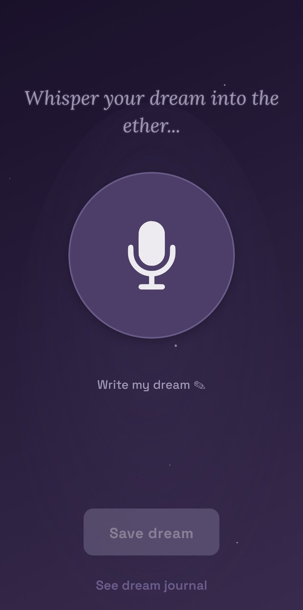
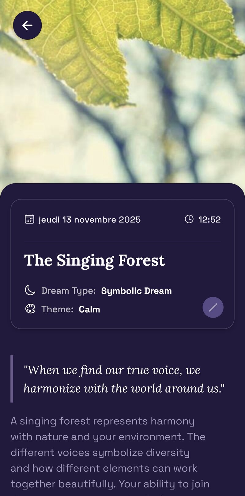
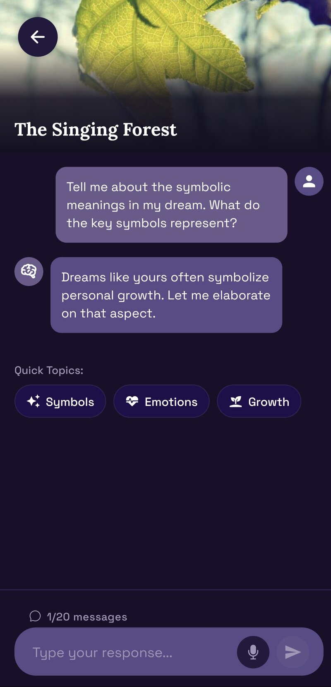
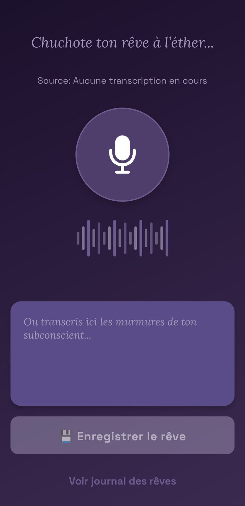
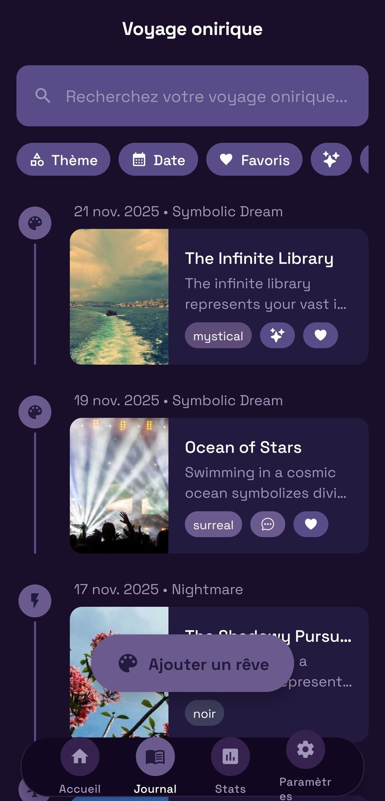

Entdecke, was deine
Träume dir sagen
Dein intelligenter Traumbegleiter. Nimm deine Träume per Sprache auf und lass dich leiten, um dich selbst besser zu verstehen.
Verfügbar bei Google Play

Dein intelligenter Traumbegleiter. Nimm deine Träume per Sprache auf und lass dich leiten, um dich selbst besser zu verstehen.
Verfügbar bei Google Play
Verwandle verschwommene Erinnerungen in konkrete Erkenntnisse – in drei einfachen Schritten.
Erzähle beim Aufwachen einfach deinen Traum laut. Die App erfasst jedes Detail, bevor es verblasst.

Dein Traumbegleiter transkribiert und entschlüsselt sofort Symbole, Emotionen und verborgene Archetypen in deiner Geschichte.

Visualisiere deinen Traum mit einem generierten Bild und chatte mit deinem Traumbegleiter, um die persönliche Bedeutung zu vertiefen.

Eine Suite fokussierter Werkzeuge, um deine Nächte in Selbsterkenntnis zu verwandeln.
Hör auf, im Dunkeln zu tippen. Noctalia verwandelt dein verschlafenes Flüstern in sauberen, strukturierten Text.


Jede Traumreise wird automatisch in Noctalia illustriert.
Erkenne wiederkehrende Themen und verfolge, wie sich deine nächtliche Stimmung im Laufe der Zeit entwickelt.
Du fragst dich, warum du davon träumst, Zähne zu verlieren oder zu fliegen. Du suchst nach Bedeutung.
Du nutzt Tagebuchschreiben und persönliche Entwicklung, um dich selbst besser zu verstehen.
Du praktizierst oder möchtest luzides Träumen lernen, um dein Unterbewusstsein zu lenken.
Entdecke die Magie deiner Nächte ohne Verpflichtung.
Sei unter den Ersten, die unbegrenzte Analysen, HD-Bilder und erweiterte Statistiken nutzen können.
Verfügbar bei Google Play.
Oder 19 EUR/Jahr (2 Monate gratis)
7 Tage Testphase inklusive, einfach kündbar.
Noctalia nutzt fortschrittliche Sprachmodelle, die von der analytischen Psychologie (Jung) und der Traumsymbolik inspiriert sind. Die Analyse-Engine erkennt wiederkehrende Motive und Archetypen, um dir Denkanstöße zu geben, ohne jemals eine absolute Wahrheit zu behaupten.
Absolut. Deine Aufnahmen und Notizen werden verschlüsselt und sicher gespeichert. Nur du hast Zugriff darauf. Wir verkaufen niemals deine persönlichen Daten.
Ja. Wenn du deinen Partner nicht wecken möchtest oder einfach lieber schreibst, steht ein vollständiger Texteditor neben der Sprachaufnahme zur Verfügung.
Du kannst Träume offline aufnehmen. Analyse und Synchronisierung laufen automatisch, sobald du wieder verbunden bist.
Entdecke die Bedeutung von über 50 gängigen Traumsymbolen. Verstehe, was dein Unterbewusstsein dir sagen will.
Emotionen & Unterbewusstsein
Kontrollverlust
Freiheit & Transzendenz
Angst & Selbstbild
Verwandlung
Kreativität & Angst
Treue & Schutz
Unabhängigkeit & Intuition
Das Selbst & die Psyche
Lebensrichtung
Chancen
Leidenschaft & Zerstörung
Enden & Wiedergeburt
Vermeidung & Angst
Tiefe Emotionen
Das Unbekannte
Ja, ein vollständiger Texteditor steht zur Verfügung, wenn du deine Träume lieber schreibst statt sie per Sprache aufzunehmen.